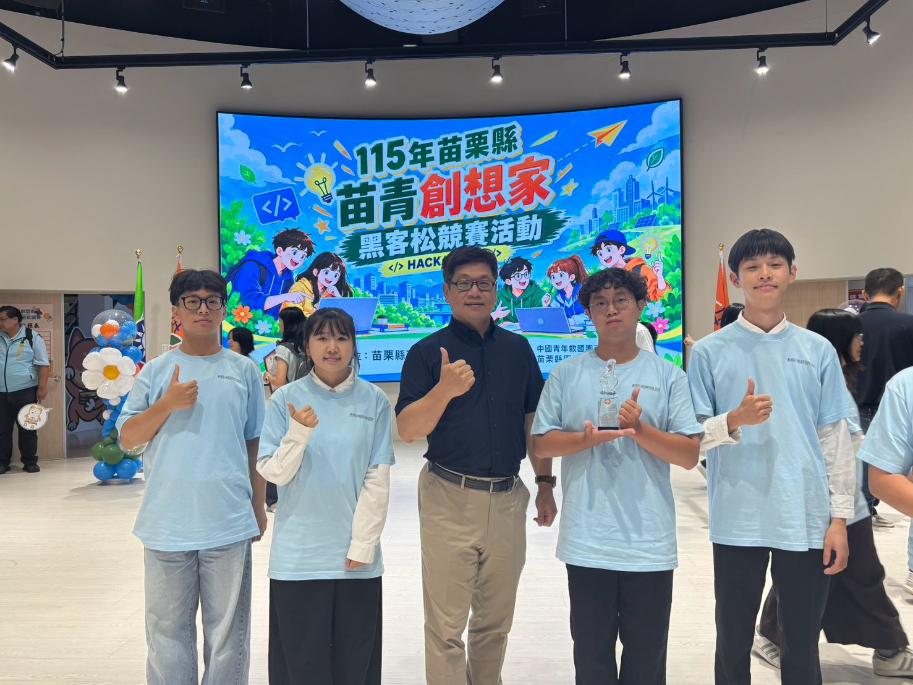
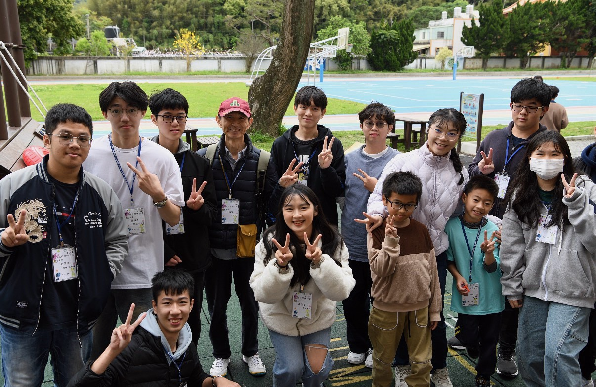
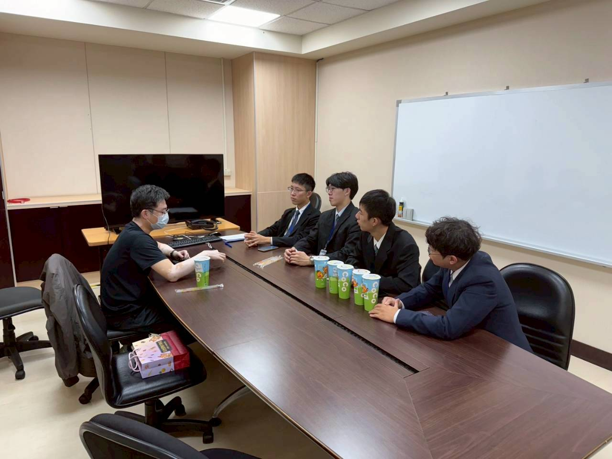
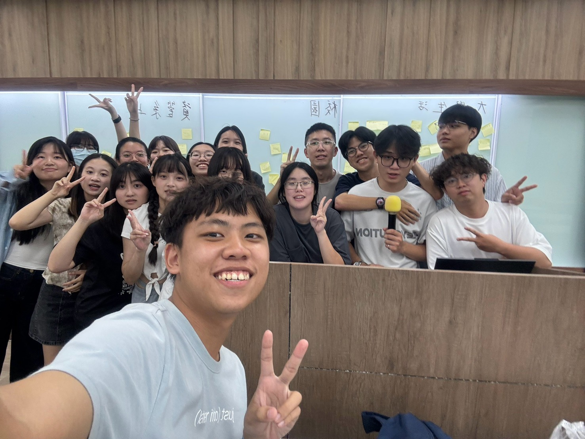

EXPERIENCE / 經歷與榮譽
參與不同現場，留下成長的紀錄。
競賽、志工、企業參訪與校園參與各自歸類，點開卡片即可閱讀經歷與查看照片。
競賽與榮譽 03
從黑客松到球場，記錄團隊挑戰的成果。

HACKATHON / 團隊競賽苗栗黑客松・最佳潛力星
苗青創想家黑客松競賽獲獎紀錄。
閱讀經歷
苗栗黑客松・最佳潛力星
苗青創想家黑客松競賽獲獎紀錄。
閱讀經歷
 BASKETBALL / 籃球
BASKETBALL / 籃球校長盃籃球比賽・第三名
團隊合作與臨場應變的競賽經驗。
閱讀經歷
校長盃籃球比賽・第三名
團隊合作與臨場應變的競賽經驗。
閱讀經歷BASKETBALL / 團隊競賽
校長盃籃球比賽 第三名
透過比賽累積團隊合作、溝通協調與臨場應變經驗。
 BASKETBALL / 籃球
BASKETBALL / 籃球新生盃籃球比賽・第三名
累積球場上的溝通與配合經驗。
閱讀經歷
新生盃籃球比賽・第三名
累積球場上的溝通與配合經驗。
閱讀經歷BASKETBALL / 團隊競賽
新生盃籃球比賽 第三名
在球場上學習配合隊友，累積團隊競賽的實戰經驗。
志工服務與國際交流 03
將參與和陪伴，變成能回看的服務紀錄。

SERVICE / 課業輔導社團偏鄉課業輔導社團
參與偏鄉課業輔導社團，累積服務與陪伴經驗。
閱讀經歷
偏鄉課業輔導社團
參與偏鄉課業輔導社團，累積服務與陪伴經驗。
閱讀經歷活動與服務
偏鄉課業輔導社團
- 參與角色
- 參與偏鄉課業輔導社團服務，與團隊及學生互動。
- 具體行動
- 投入課業陪伴與學習支持相關社團活動，保留團隊及學生的合影紀錄。
- 經驗累積
- 在社團服務中累積溝通、團隊合作與陪伴經驗。
 VOLUNTEER / 資訊教育
VOLUNTEER / 資訊教育資訊志工服務
資訊教育推廣、Scratch 教學協助與活動服務。
閱讀經歷
資訊志工服務
資訊教育推廣、Scratch 教學協助與活動服務。
閱讀經歷活動與服務
資訊志工服務
- 參與角色
- 參與資訊志工服務，協助國小學生學習 Scratch 程式設計。
- 具體行動
- 協助資訊教育推廣、教學與活動規劃，陪伴學生練習邏輯思考。
- 經驗累積
- 將資訊學習與志工服務連結，累積教學協助及溝通經驗。
EXCHANGE / 姊妹校交流日本姊妹校交流接待志工
日本高知高專一日交流團接待與志工服務。
閱讀經歷
日本姊妹校交流接待志工
日本高知高專一日交流團接待與志工服務。
閱讀經歷2025.03.03 / INTERNATIONAL EXCHANGE
國際交流・志工服務日本姊妹校交流
接待志工
- 活動名稱
- 日本高知高專一日交流團
- 參與角色
- 協助交流團接待志工服務工作，參與日本姊妹校學生來臺交流。
- 服務內容
- 透過親切接待與積極交流，協助來臺日本學生認識本校與臺灣文化，支持姊妹校間的交流與合作。
- 成果佐證
- 持有國立聯合大學研究發展處核發的志工服務證明；文件附件未公開。
企業參訪與職涯探索 01
走出課堂，累積接觸企業場域的經驗。

INDUSTRY / 企業參訪ENNOSTAR 企業參訪
大二與同學參訪企業，參與現場交流。
閱讀經歷
ENNOSTAR 企業參訪
大二與同學參訪企業，參與現場交流。
閱讀經歷SOPHOMORE YEAR / INDUSTRY VISIT
企業參訪・職涯探索ENNOSTAR 企業參訪
- 參與經歷
- 大學二年級期間與同學參訪 ENNOSTAR，參與現場交流，累積接觸企業場域的經驗。
- 活動紀錄
- 保留參訪交流照片，作為校外學習與職涯探索的參與紀錄。
- 學習方向
- 將企業參訪納入職涯探索歷程；當日交流主題與個人心得可再補充。
校園參與 01
在活動與協作中，累積組織和溝通經驗。

CAMPUS / 校園參與資訊管理學系系學會幹部
活動規劃與行政協調，附系學會活動合影；職稱及任期待補。
閱讀經歷
資訊管理學系系學會幹部
活動規劃與行政協調，附系學會活動合影；職稱及任期待補。
閱讀經歷CAMPUS / 校園參與
資訊管理學系系學會幹部
參與活動規劃、行政協調與團隊合作，在課業之外累積組織與協作經驗。